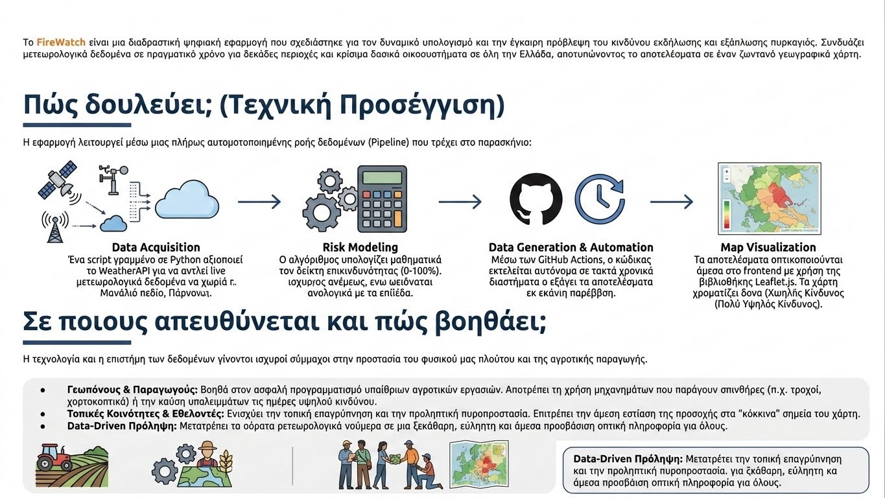

Το FireWatch είναι μια διαδραστική ψηφιακή εφαρμογή που σχεδιάστηκε για τον δυναμικό υπολογισμό και την έγκαιρη πρόβλεψη του κινδύνου εκδήλωσης και εξάπλωσης πυρκαγιάς. Συνδυάζει μετεωρολογικά δεδομένα σε πραγματικό χρόνο για δεκάδες περιοχές και κρίσιμα δασικά οικοσυστήματα σε όλη την Ελλάδα, αποτυπώνοντας τα αποτελέσματα σε έναν ζωντανό γεωγραφικό χάρτη.

Πώς δουλεύει; (Τεχνική Προσέγγιση)
Η εφαρμογή λειτουργεί μέσω μιας πλήρως αυτοματοποιημένης ροής δεδομένων (Pipeline) που τρέχει στο παρασκήνιο:
- Data Acquisition: Ένα script γραμμένο σε Python αξιοποιεί το WeatherAPI για να αντλεί live μετεωρολογικά δεδομένα (θερμοκρασία, σχετική υγρασία, ταχύτητα ανέμου) για στοχευμένες πόλεις και χωριά (π.χ. Μαινάλιο πεδίο, Πάρνωνας).
- Risk Modeling: Ο αλγόριθμος υπολογίζει μαθηματικά τον δείκτη επικινδυνότητας (0-100%). Ο κίνδυνος αυξάνεται εκθετικά με τις υψηλές θερμοκρασίες και τους ισχυρούς ανέμους, ενώ μειώνεται αναλογικά με τα επίπεδα υγρασίας.
- Data Generation & Automation: Μέσω των GitHub Actions, ο κώδικας εκτελείται αυτόνομα σε τακτά χρονικά διαστήματα και εξάγει τα αποτελέσματα σε μορφή JSON, ανανεώνοντας τη βάση δεδομένων χωρίς καμία ανθρώπινη παρέμβαση.
- Map Visualization: Τα αποτελέσματα οπτικοποιούνται άμεσα στο frontend με χρήση της βιβλιοθήκης Leaflet.js. Ο χάρτης χρωματίζει δυναμικά τις περιοχές από πράσινο (Χαμηλός Κίνδυνος) έως κόκκινο (Πολύ Υψηλός Κίνδυνος).
Σε ποιους απευθύνεται και πώς βοηθάει;
Η τεχνολογία και η επιστήμη των δεδομένων γίνονται ισχυροί σύμμαχοι στην προστασία του φυσικού μας πλούτου και της αγροτικής παραγωγής.
- Γεωπόνους & Παραγωγούς: Βοηθά στον ασφαλή προγραμματισμό υπαίθριων αγροτικών εργασιών. Αποτρέπει τη χρήση μηχανημάτων που παράγουν σπινθήρες (π.χ. τροχοί, χορτοκοπτικά) ή την καύση υπολειμμάτων τις ημέρες υψηλού κινδύνου.
- Τοπικές Κοινότητες & Εθελοντές: Ενισχύει την τοπική επαγρύπνηση και την προληπτική πυροπροστασία. Επιτρέπει την άμεση εστίαση της προσοχής στα "κόκκινα" σημεία του χάρτη.
- Data-Driven Πρόληψη: Μετατρέπει τα αόρατα μετεωρολογικά νούμερα σε μια ξεκάθαρη, εύληπτη και άμεσα προσβάσιμη οπτική πληροφορία για όλους.
← Επιστροφή στο Portfolio